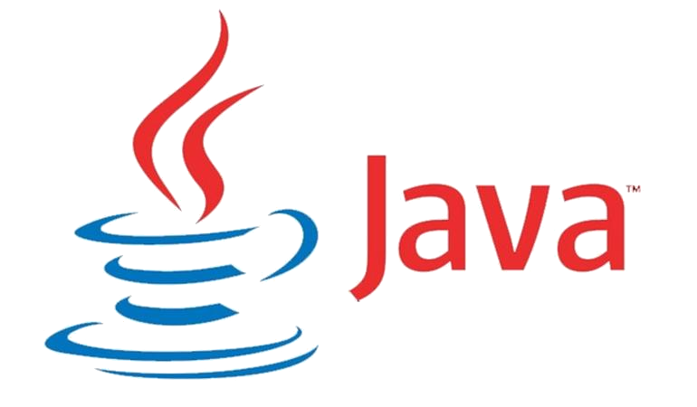

Resume
Education
University of North Carolina at Charlotte * Charlotte, NC
B.S. Computer Science (May 2019) Concentration: Data Science Minor: Mathematics
Central Piedmont Community College * Charlotte, NC
A.A.S. Simulation and Game Development (2009)
A.G.E. General Education (2012)
Work Experience
NoDa Brewing Company
Quality Assurance Manager (November 2015 - January 2018)
Assistant Brewer/Cellarperson (April 2014 - October 2015)
Delivery Specialist/Line Cleaner (May 2013 - March 2014)
University of North Carolina at Charlotte; Chemistry Department
Learning Coach (August 2011 - December 2011)
Undergraduate Assistant (May 2011 - June 2011)
Relavent Skills
- 
- Data Structures
- Data Analytics
- Computer Vision
- Machine Learning
- Web Mining
- Machine Learning
- Microsoft Office Suite
- Linux and WIndows